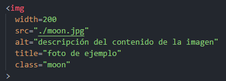

Sitio Corporativo
Desarrollo de un sitio web corporativo con una interfaz amigable y moderna.

Para escribir títulos podemos usar las etiquetas: h1... h6
Etiqueta p se usa para los párrafos.
Con la etiqueta strong podemos resaltar carácteres.
Para abrir la ternimal en VSC: ctrl + ñ
Este texto, inicialmente no resaltado, ahora resaltado con la etiqueta mark.
Etiquetas de cursiva, negrita, subrayado:
Texto tachado.
A2 <-- superíndice
A2 <-- subíndice
Podemos escribir comentarios usando < ! - - aquí el comentario - - >
En VSC ctrl + k + c y ctrl + k + u para poner y quitar comentarios.
Atributos globales: que se pueden usar en todas las etiquetas html como: class, id
Atributos específicos: son propios de ciertas etiquetas como: src, alt
Atributos booleanos: solo basta con escribirlos en la etiqueta, si lo ponemos funcionan como true, por ejemplo el atributo hidden
Se utilizan para insertar un enlace en un documento. Permiten la navegación interna en tu documento y externa a otras páginas.

 Sylvee
Sylvee

Recuerda que podemos usar el servicio de la nube Cloudinary para almacenar imágenes.
Es el correcto uso de las diferentes etiquetas html para la descripción del contenido la página.
Ejemplo de HTML semántico:
Desarrollo de un sitio web corporativo con una interfaz amigable y moderna.
Importante: La etiqueta div y span solo la usamos cuando queremos agrupar elementos cuando no hay un significado semántico.
La etiqueta span es la versión en línea de una etiqueta div. Mientras que esta última se utiliza para agrupar otras etiquetas variadas, agruparlas y organizarlas de forma semántica o con cierto sentido, la etiqueta span permite hacer lo mismo con fragmentos de texto en línea, sin cambiar el flujo del mismo.
Algunos objetos que normalmente funcionan como objetos de reemplazo. Se los pueden identificar porque no tienen etiquetas de cierre como: img, object, video o elementos de formulario como textarea, input.
Son las etiquetas más usadas, permite que el usuario enviar datos al servidor.
Importante: Usar en los input el type correcto para cada tipo de información: text, number, tel, email, date-time...
Estudié en la universidad pública de mi ciudad.
Me gusta el deporte y dibujar.
Me gusta mucho JavaScript porque fue el primero que aprendí.
Son etiquetas que permiten insertar otra página dentro de tu página, su uso más popular es para agregar videos.